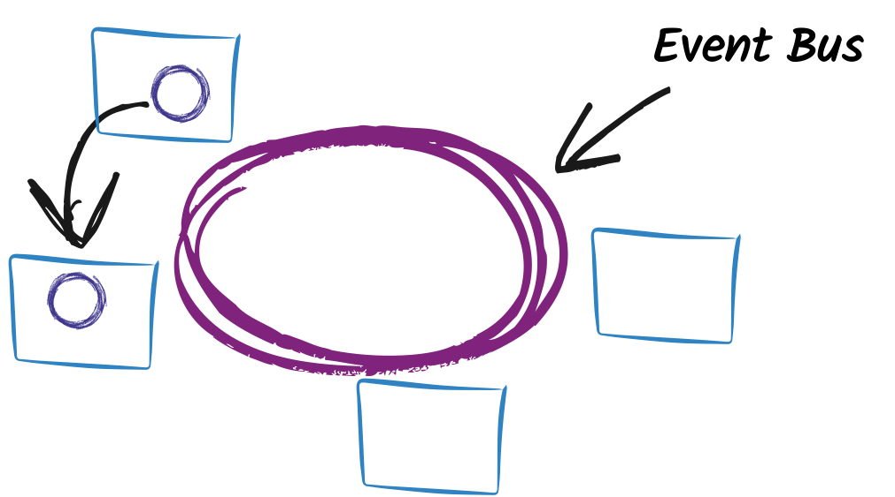
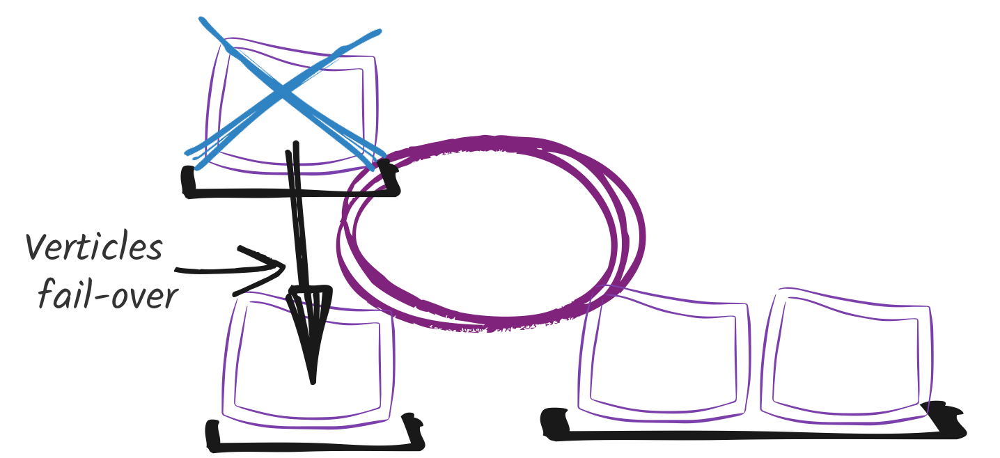
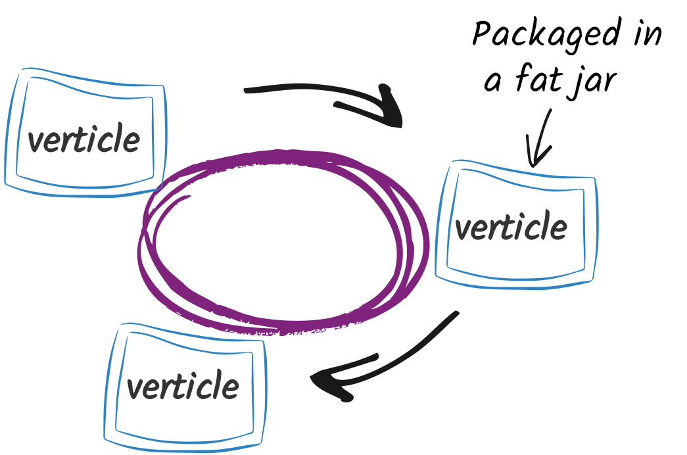

Vert.X
full throttle applications
Paulo Lopes
Welcome
Did you already use vert.x ?
Did you hear about micro-services architecture ?
Did you already deployed micro-services based applications ?
Outline
- Micro-services: why and what
- vert.x in 10 minutes
- Presentation of the application: Check-in
- You first service
- Composing vert.x service
- Providing a REST api
Micro-services: why and what
Because it grows faster than you think
Becoming touchy
Decentralization
To keep things under control, makes them:
small
loosely-coupled
highly coherent
Process
Process
Process
Process
A few steps later
Not a silver bullet
Pro
Asynchronous evolution
Better local understanding
Scalability
Integration / Polyglot
Cons
Global debug
Deployment
Latency (multi-hop)
Dynamic availability
Micro-service
!=
container
Micro-service
!=
REST
Vert.X
a toolkit to build micro-service applications
Vert.X
Framework
Unopiniated
Reactive
Polyglot
Distributed
Reactor-pattern
Reactor-pattern

Reactor-pattern

Reactor-pattern
What is ?
A Message
A Notification
A HTTP Request
A command
A file
A result, an error
Asynchronous Development Model
void operation(param1, param2, Handler<T> handler) {
// ...
T t = ...
handler.handle(t)
// ...
}void handle(T t) {
// do something with t
}operation(1, 2, t -> System.out.println(t));Asynchronous Development Model
The event bus

Point to Point
Publish / Subscribe
Request / Response
The event bus
Point to Point
Publish / Subscribe
Request / Response
The event bus

Point to Point
Publish / Subscribe
Request / Response
The event bus

The event bus allows distributed communication.
The event bus

Almost anything
can send / receive messages
Verticles
An agent-like model
Verticles are chunks of code that get deployed and run by Vert.x.
vertx.deployVerticle("my.verticle");Verticles
An agent-like model

Dead verticles are restarted on a running node.
vertx.deployVerticle("my.verticle"),
new DeploymentOptions().setHA(true));Polyglot
EventBus eb =
vertx.eventBus();
eb.publish("some-topic",
"Some data from Java");var eb = vertx.eventBus();
eb.publish("some-topic",
"Some data from JS");eb = $vertx.event_bus()
eb.publish("some-topic",
"Some data from Ruby")def eb = vertx.eventBus()
eb.publish("some-topic",
"Some data from Groovy")vert.x in 1 slide

Vert.X
&
Micro-Services
From verticles to micro-services
Verticles are loosely-coupled.
From verticles to micro-services

Verticles can be deployed individually.
From verticles to micro-services
Verticles can
evolve
asynchronously.
From verticles to micro-services
Micro-services interacts using the event bus.
vertcheckin
vert2go
Micro-Service application
Storage: MongoDB
Service invocation protocol: Event Bus proxies, REST
UI: Leaflet.js, SockJS